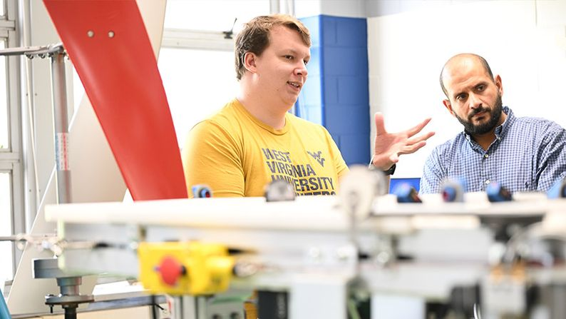
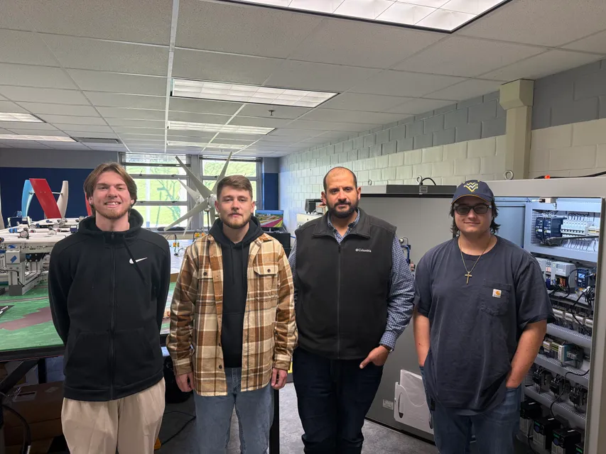

Michael Barchett
The CIL owes its existance to Michael Barchett and his capstone project, which were directly reponsible for its creation. The Lab was built as part of Michaels capstone, being created with systems and equipment he used out in the real world. While initially the space was designed as a lab for students to learn and experiment with real-life analogs, plans for the lab extend to using it to teach as well. Read more about Michael and his vision for the CIL here: From capstone project to real world resource.

Beyond the Fixed Timer

Three Students from the CIL won the "Share your Science" award in the Appalachian Scholars Contest in 2025. Tiago Breunig, Jerin Adkins, and Nathanson Gageby's winning project applied AI traffic modeling to create addaptive and efficient signaling systems for Appalachian roads. The aim of their project was to propose a 2-step modernization plan, starting by updating intersection infrastructure, followed by adding an AI-powered analysis pipeline to adjust patterns in real time to improve efficiency. Traditional systems used simple timed gated light changes to control traffic at intersections, which can often lead to highly inefficient use of time and lead to traffic backups, this project seeks to minimize this problem. Read more here 2025 Winners of "Share your Science" in the Appalachian Scholars Contest.